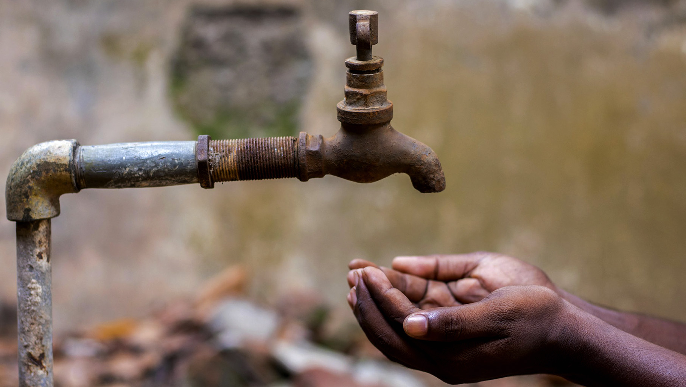

Ensure availability and sustainable management of water and sanitation for all

As one of the Seventeen Goals of the United Nations in the Sustainable Development.
People across the world still suffer from not having clean and drinkable water,
especially countries in third world countries who have direct access to water sources.
According to World Divison - 1 in 11 people -
lack the access to clean water, that translate to 703 million people.
Let us unite and fight for those who are suffering everyday that don't have access to clean and drinkable water.